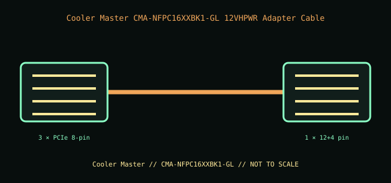

[ INTERNAL PC POWER CABLE // MODEL-SPECIFIC RECORD ]
Cooler Master CMA-NFPC16XXBK1-GL 12VHPWR Adapter Cable
Cooler Master manufacturer part CMA-NFPC16XXBK1-GL. This record documents only this specified cable assembly; connector fit is not evidence of a matching pinout or PSU compatibility.

PSU SAFETY: Modular PSU-side cable pinouts are proprietary and model-family-specific. Never substitute a modular cable by brand, connector fit, color, or appearance; use only the exact PSU maker-approved cable for the exact PSU model and revision.
Manufacturer specifications
| Manufacturer part | Cooler Master CMA-NFPC16XXBK1-GL |
|---|---|
| Connector / pin count | GPU end: one 12+4-pin (16-contact) 12VHPWR connector; PSU-facing end: three 8-pin PCIe connectors. One GPU connector is right-angle oriented. |
| Wire gauge / length | 16 AWG power conductors; 28 AWG sense conductors; 650 mm (65 cm). |
| Compatible PSU family | Only Cooler Master PSU models in the manufacturer’s Type 1 compatibility listing, with three native PCIe 8-pin cable connections. Treat it as the specified adapter assembly, not as a universal direct modular PSU cable; never plug it into PSU-side sockets based on fit. |
Power and safety caveats
Manufacturer rates the assembly up to 600 W. Connect all three PSU-side PCIe plugs to appropriate native leads as specified by Cooler Master. Do not daisy-chain or add SATA/LP4 converters. Confirm the GPU and PSU power budgets, seat the 16-pin plug completely, and follow the GPU/PSU manufacturer bend guidance.
Case clearance and routing
Measure the 650 mm path from the PSU-side lead routing to the card. The angled plug changes the required side-panel envelope but does not permit connector strain; leave the card-end space needed to seat it fully and avoid pressure from the panel or adjacent fans.
Manufacturer specifications and manuals
- Cooler Master — 12VHPWR Adapter Cable specificationsManufacturer product specifications for connector, gauge, power, and cable length.
- Cooler Master Store — 90-degree 3×8-pin adapter, 650 mmManufacturer product listing for the 90-degree Type 1 cable and compatible V-series PSU family.
- Cooler Master — ATX 3.1 overviewManufacturer guidance on the 12VHPWR/12V-2x6 power interface; not a substitute for model-specific PSU compatibility.
Use current manufacturer documentation for exact model revisions and installation. This archive illustration is a connector-identification schematic, not an electrical pinout.